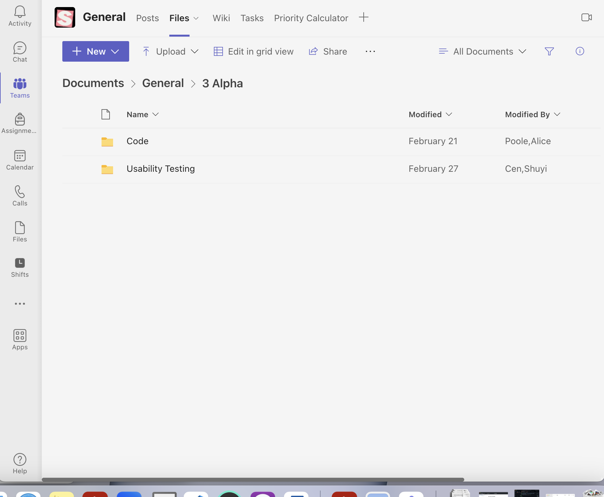
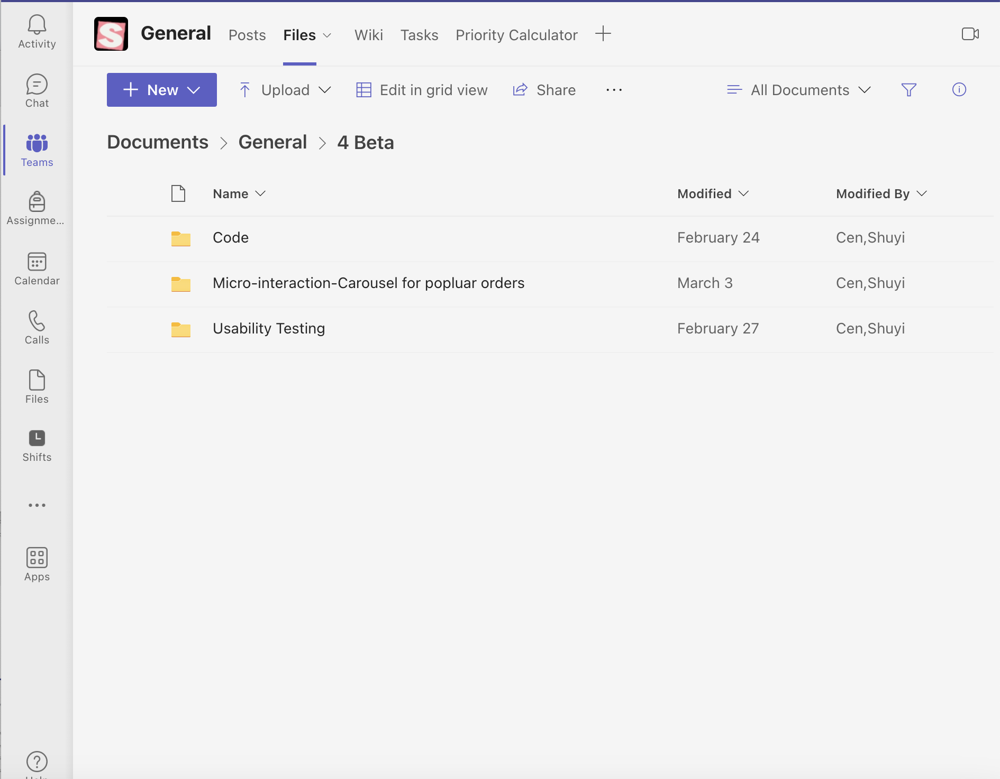
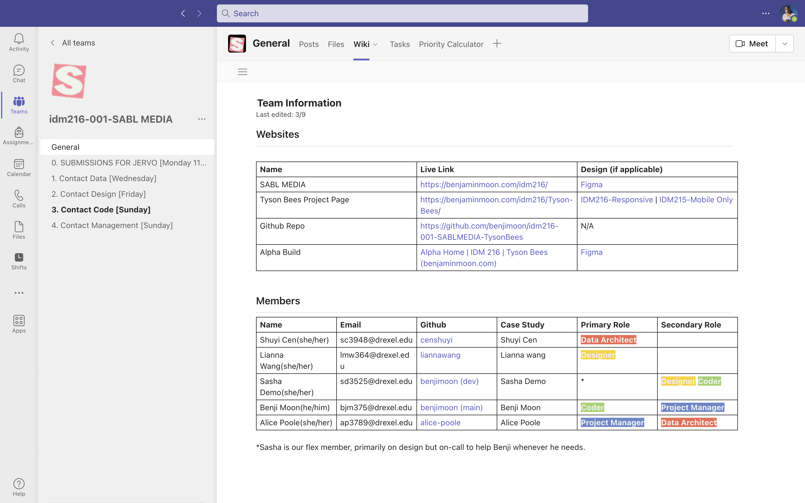
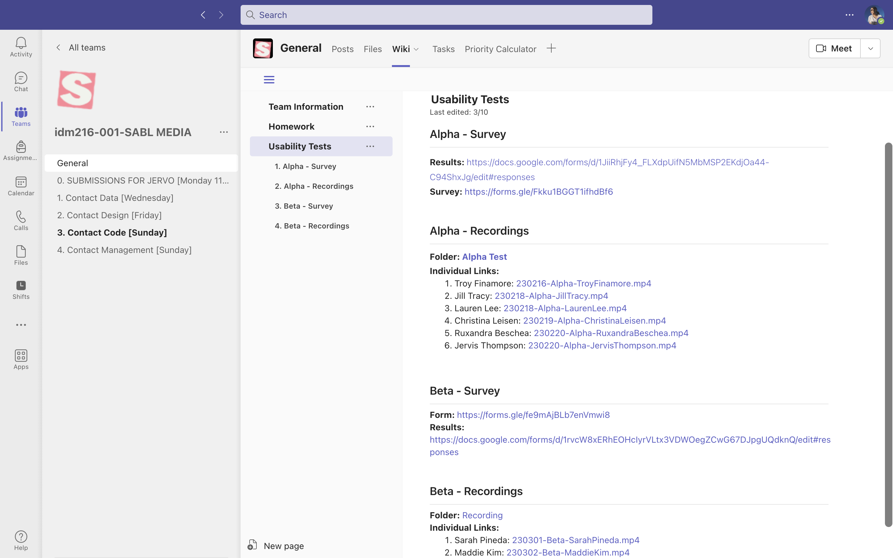

Tyson Bees is a food truck located at 33rd St & Spruce St and open 11:00 AM - 5:30 PM from Monday through Friday. This is a 10 weeks design project beginning in January 2023. It is a team-based project, and my role on the project is data architect.
I am the data architect for Tyson Bee's Web Design Project. My role in the project is to collect and organize the data obtained and maintain databases since the project's outset in January 2023.
My job is to help manage the information the projects need. It includes collecting Figma assets, creating and organizing files, communicating with team members for file support, and taking notes and google forms during Alpha and Beta interviews.
As a data architect, My goal at the team is to help all team members find project information quickly and easily.
My role as a data architect at the project started with setting up an organized folder structure such as the wiki section, and team member contact information.
Create folders by define each categories such as folder for
IDM 216 Sabl Media General Folder
IDM 216 Tyson Bees Project Folder





